Magie ducha
Duchovní ¹íp
Mana: 1, Cena: 100
Vystøelí proud negativní duchovní energie na jednu obì». Mù¾e minout, ale s rostoucí dovedností Magie Ducha roste i ¹ance zásahu. ©íp zpùsobí 1-6 bodù zranìní.
| 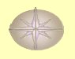 | Normální | Støední zotavení |
| Expert | Rychlej¹í zotavení | |
| Mistr | Nejrychlej¹í zotavení |
Po¾ehnání
Mana: 2, Cena: 200
Po¾ehnané postavy mají zvý¹enou ¹anci na zásah jak zbraní na blízko, tak støelami. ©ance na zásah se zvy¹uje o 5 + 1 za bod v Magii Ducha.
| 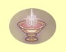 | Normální | Trvání 1 hodina + 5 minut za bod dovednosti |
| Expert | Kouzlo pùsobí na v¹echny | |
| Mistr | Trvání 1 hodina + 15 minut za bod dovednosti |
Léèivý dotek
Mana: 3, Cena: 300
Levnì uzdraví jedné postavì 3-7 bodù zdraví. Vy¹¹í dovednost zkracuje dobu zotavení.
| 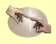 | Normální | Léèí 3-7 bodù zdraví |
| Expert | Léèí 5-9 bodù zdraví | |
| Mistr | Léèí 7-11 bodù zdraví |
©»astný den
Mana: 4, Cena: 400
Doèasnì zvy¹uje ¹tìstí o 10 plus 2 body za bod dovednosti v Magii Ducha.
| 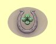 | Normální | Zvy¹uje ¹tìstí o 10 plus 2 body za bod dovednosti |
| Expert | Zvy¹uje ¹tìstí o 10 plus 3 body za bod dovednosti | |
| Mistr | Kouzlo pùsobí na celou dru¾inu |
Odstranìní prokletí
Mana: 5, Cena: 500
Pokud je zakouzleno vèas, odstraní prokletí jedné postavy. Èím vy¹¹í je dovednost a úroveò Magie Ducha, tím déle trvá, ne¾ prokletý dosáhne "bodu bez návratu", kdy u¾ kouzlo nepomù¾e. Potom u¾ zbývá, pokud neumíte Bo¾ský zásah, jen jediná mo¾nost zvrácení tohoto stavu, náv¹tìva chrámu.
| 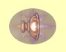 | Normální | Funguje pokud nebyl hrdina prokletý déle ne¾ 3 minuty za bod dovednosti |
| Expert | Funguje pokud nebyl hrdina prokletý déle ne¾ 1 hodinu za bod dovednosti | |
| Mistr | Funguje pokud nebyl hrdina prokletý déle ne¾ 1 den za bod dovednosti |
Andìl strá¾ný
Mana: 8, Cena: 750
Ve spojení s mocnými silami doká¾e o¾ivit hrdiny a vráti je do chrámu, který nav¹tívili naposledy pøed smrtí. cena za tuto slu¾bu je polovina v¹ech zlatých, které mají hrdinové v okam¾iku smrti u sebe. Andìl strá¾ný pùsobí 1 hodinu za ka¾dý bod Magie Ducha.
| 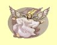 | Normální | Hrdinové jsou o¾iveni s 1 bodem zdraví |
| Expert | Hrdinové jsou o¾iveni s polovinou zdraví | |
| Mistr | Hrdinové jsou o¾iveni s plným zdravím |
Hrdinství
Mana: 10, Cena: 1000
Hrdinství zvy¹uje zpùsobená zrnìní pøi úspì¹ném útoku o 5 + 1 bod zásahu za ka¾dý bod Magie Ducha.
| 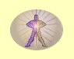 | Normální | Trvání 1 hodina + 5 minut za bod dovednosti |
| Expert | Kouzlo pùsobí na v¹echny | |
| Mistr | Trvání 1 hodina + 15 minut za bod dovednosti |
Za¾eò nemrtvé
Mana: 15, Cena: 1500
Pøinutí v¹echny nemrtvé v dohledu, aby ustupovali, dokud kouzlo trvá. Kouzlo vydr¾í 3 minuty plus 3 minuty za ka¾dý bod Magie Ducha.
| 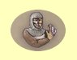 | Normální | Støední zotavení |
| Expert | Rychlej¹í zotavení | |
| Mistr | Nejrychlej¹í zotavení |
O¾iv mrtvého
Mana: 20, Cena: 2000
Pokud je zakouzleno vèas, doká¾e vzkøísit mrtvého hrdinu. Èím vy¹¹í je dovednost a úroveò Magie Ducha, tím déle trvá, ne¾ mrtvý dosáhne "bodu bez návratu", kdy u¾ kouzlo nepomù¾e. Potom u¾ zbývá, pokud neumíte Bo¾ský zásah, jen jediná mo¾nost zvrácení tohoto stavu, náv¹tìva chrámu. Hrdina vzbuzený tímto kouzlem procitne a zùstává ve slabé kondici.
| 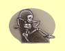 | Normální | Funguje pokud nebyl hrdina mrtvý déle ne¾ 3 minuty za bod dovednosti |
| Expert | Funguje pokud nebyl hrdina mrtvý déle ne¾ 1 hodinu za bod dovednosti | |
| Mistr | Funguje pokud nebyl hrdina mrtvý déle ne¾ 1 den za bod dovednosti |
Sdílený ¾ivot
Mana: 25, Cena: 3000
Sdílený ¾ivot zkombinuje ¾ivotní sílu v¹ech hrdinù dohromady a pøerozdìlí ji zpìt co mo¾ná nejrovnomìrnìji. V¹echny aktuální body zdraví se seètou a pøidá se k nim 1 bod za ka¾dý bod v Magii Ducha. Potom se rovnomìrnì body rozdìlí zpìt v¹em hrdinùm s tím, ¾e nikdo nemù¾e mít víc, ne¾ je jeho maximální zdraví.
| 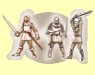 | Normální | Pøidá 1 bod zdraví za ka¾dý bod dovednosti |
| Expert | Pøidá 2 body zdraví za ka¾dý bod dovednosti | |
| Mistr | Pøidá 3 body zdraví za ka¾dý bod dovednosti |
Poznámka: Kouzlo seète aktuální mno¾ství zdraví v¹ech postav, které jsou v danou chvíli pøi vìdomí (mají kladnou hodnotu zdraví) a k této hodnotì pøiète bonus z úrovnì dovednosti. Výsledná hodnota se pak mezi tyto postavy rovnomìrnì rozdìlí (zaokrouhluje se smìrem nahoru).
Pøíklad: V dru¾inì máme 3 postavy pøi vìdomí (zdraví 100, 150 a 200) a 1 postava je v bezvìdomí (-50), klerik ovládá Sdílený ¾ivot na úrovni mistr a má v nìm investováno 10 bodù. Souèet zdraví je tedy 100 + 150 + 200 = 450, bonus z dovednosti je 3 x 10 = 30, dohromady tedy 480. Pøi vìdomí jsou jen 3 postavy, ka¾dá tedy dostane 480 / 3 = 160 bodù zdraví, ètvrtá postava zùstává beze zmìny.
Vzkøí¹ení
Mana: 30, Cena: 5000
Vzkøísí vymýceného (znièené tìlo) hrdinu, pokud je zakouzleno vèas. Èím vy¹¹í je dovednost a úroveò Magie Ducha, tím déle trvá, ne¾ vymýcený dosáhne "bodu bez návratu", kdy u¾ kouzlo nepomù¾e. Potom u¾ zbývá, pokud neumíte Bo¾ský zásah, jen jediná mo¾nost zvrácení tohoto stavu, náv¹tìva chrámu. Hrdina vzbuzený tímto kouzlem procitne a zùstává ve slabé kondici.
| 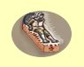 | Normální | Funguje pokud nebyl hrdina vymýcený déle ne¾ 3 minuty za bod dovednosti |
| Expert | Funguje pokud nebyl hrdina vymýcený déle ne¾ 1 hodinu za bod dovednosti | |
| Mistr | Funguje pokud nebyl hrdina vymýcený déle ne¾ 1 den za bod dovednosti |